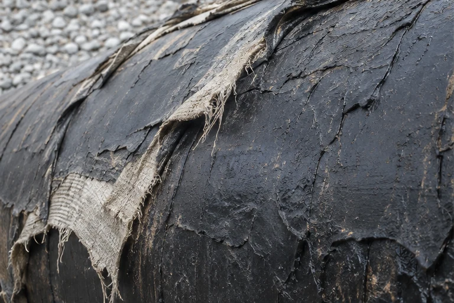
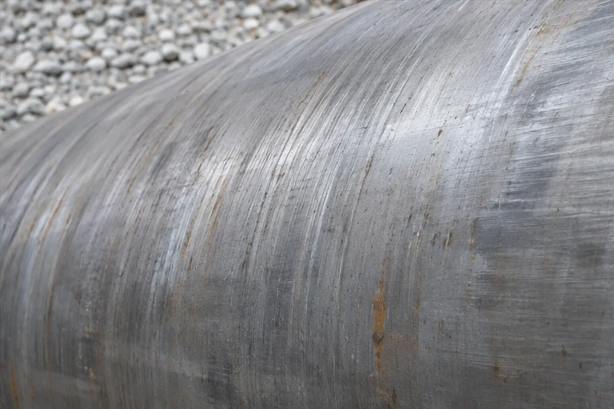

Сызрань · выезд по Самарской области
Очистка стальных труб от наружной изоляции
Механически снимаем битум, плёнку и обёртку до металла. Работаем у вас на объекте или на нашей площадке.
Минимальный заказ 10 000 ₽
Какие партии принимаем
Принимаем стальные трубы б/у, в том числе после демонтажа. Возможность очистки партии подтверждаем по диаметру, объёму и состоянию покрытия.
- Трубы
- Диаметр, длина и количество или тоннаж
- Изоляция
- Битум, плёнка или обёртка. Если тип покрытия неизвестен, пришлите фото.
- Состояние
- Общий вид партии и крупный план покрытия
До открытого металла
Снимаем битумную изоляцию, плёнку и обёртку с наружной поверхности трубы. Требования к металлу после очистки согласуем перед обработкой партии.
Собственный станок
Бригада из 2–4 мастеров снимает изоляцию на нашей площадке или на объекте заказчика. Пескоструйную обработку не применяем.
Станок в работе
В галерее объявления есть кадр с оборудованием для снятия изоляции.
Посмотреть оборудование на АвитоПоверхность в деталях
Крупный план помогает оценить покрытие. Пришлите похожий кадр вашей трубы, чтобы согласовать результат обработки.

Битум и обёртка
Фактура металлаРасчёт по партии
Стоимость очистки и сроки
Минимальный заказ — 10 000 ₽. По фото, диаметру и примерному метражу рассчитаем стоимость в тот же день. Срок работ согласуем отдельно.
Для юрлиц и ИП работаем по договору. Оплата поэтапная.
Связаться для расчётаЧто влияет на расчёт
- Размеры труб и объём партии
- Тип и состояние наружной изоляции
- Требования к поверхности после очистки
- Место работ — площадка в Сызрани или объект заказчика
Сызрань
Приёмка и логистика
Принимаем трубы на своей площадке в Сызрани. Для обработки на месте выезжаем на объекты по Самарской области.
Что обсудить заранее
- Где удобнее обработать трубы — на площадке в Сызрани или на объекте
- При доставке на площадку — время приёмки, разгрузку и вывоз
- При выезде — адрес объекта и условия доступа
Вопросы об очистке труб
Можно ли снять битумную изоляцию с труб б/у?
Да. Снимаем старый битум, плёнку и обёртку на собственном станке. Пришлите общий вид партии и крупный план покрытия, чтобы мы оценили состояние труб.
Можно ли заказать очистку с выездом?
Выезжаем на объекты по Самарской области. Укажите город и условия доступа к трубам. Можно также привезти партию на нашу площадку в Сызрани.
Что нужно для расчёта стоимости?
Укажите диаметр и примерный метраж, приложите фото. Если известны только количество труб или тоннаж, укажите их для предварительной оценки. Минимальная сумма заказа — 10 000 ₽.
Контакты
Обсудим вашу партию
Для расчёта пришлите фото труб, диаметр, примерный метраж и город объекта.